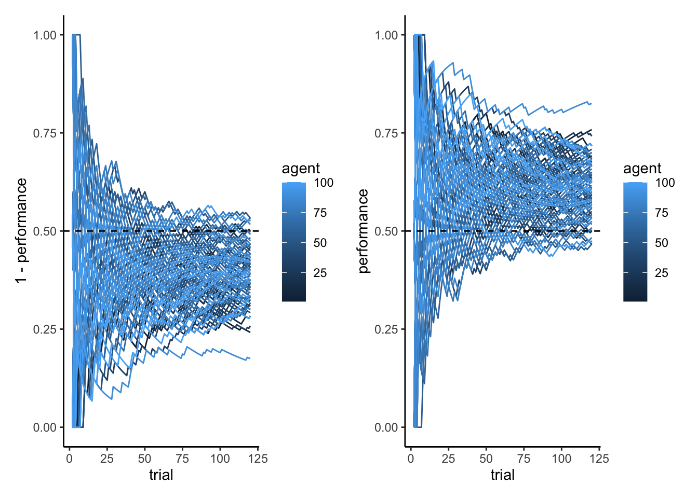
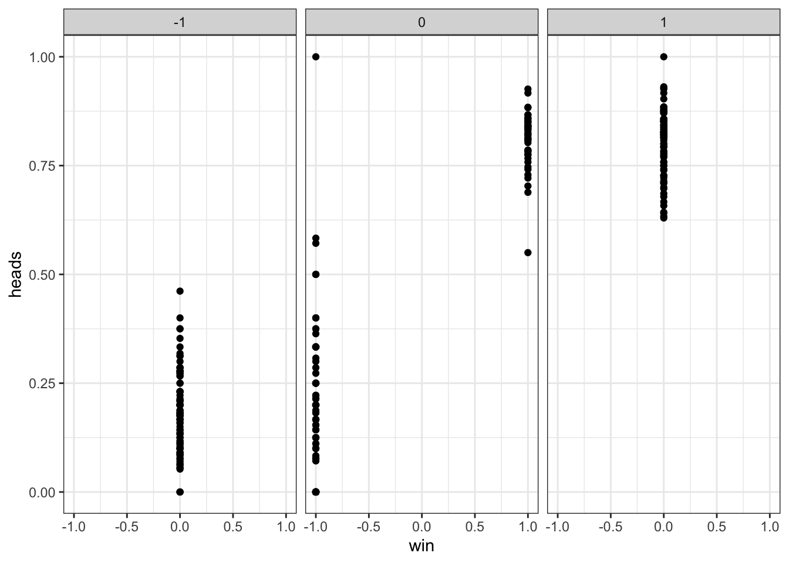
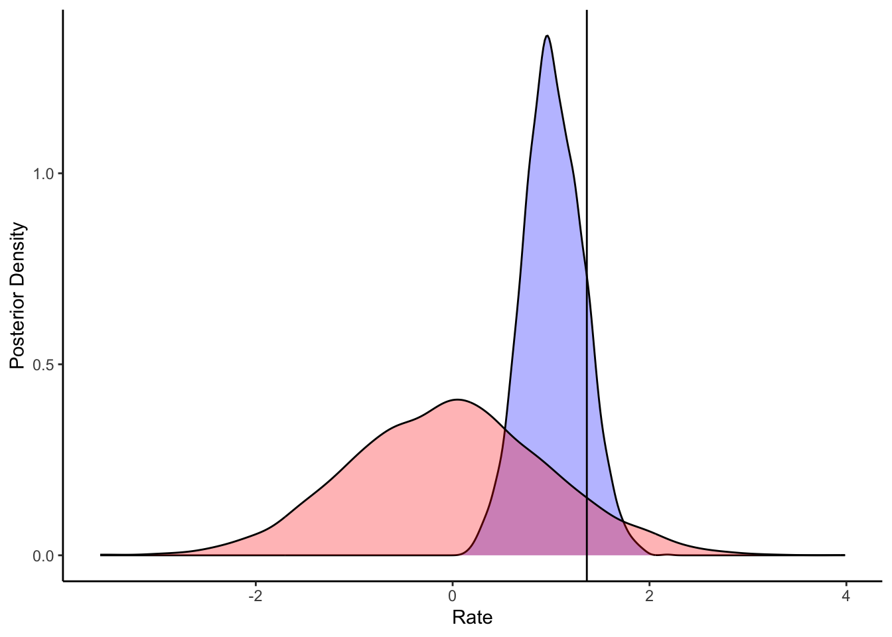
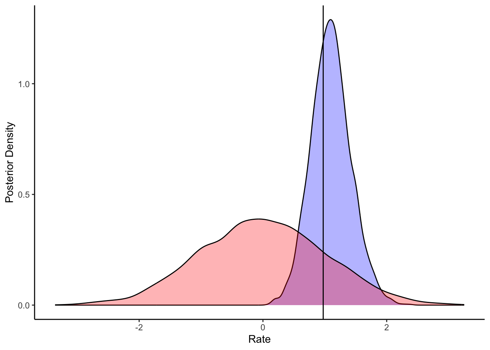
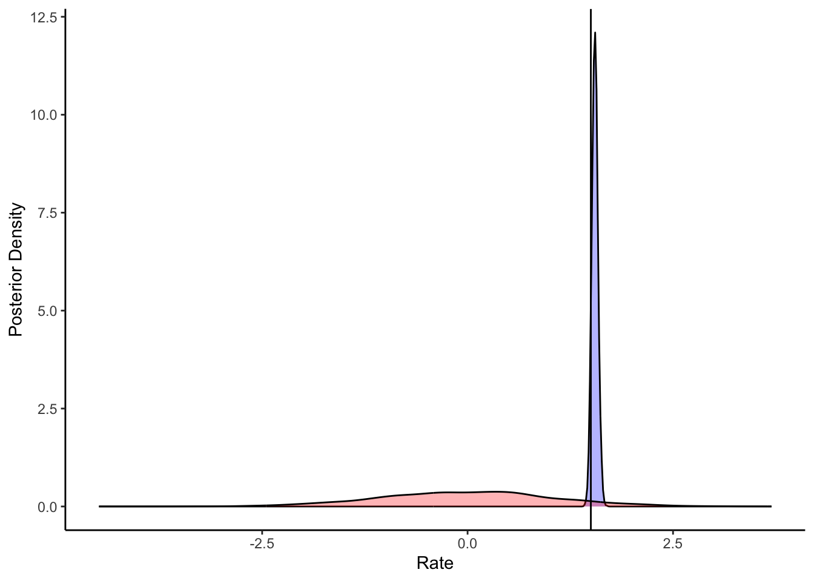
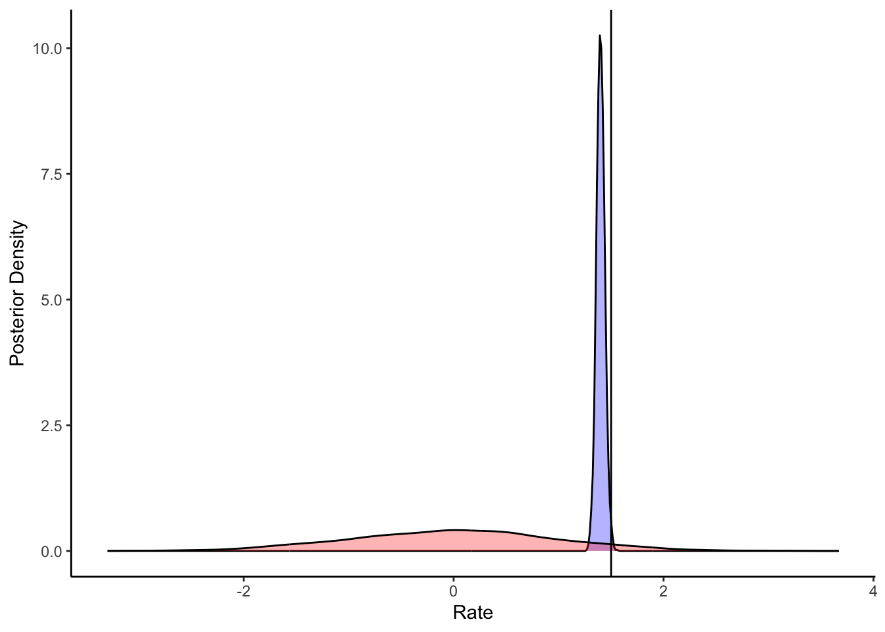
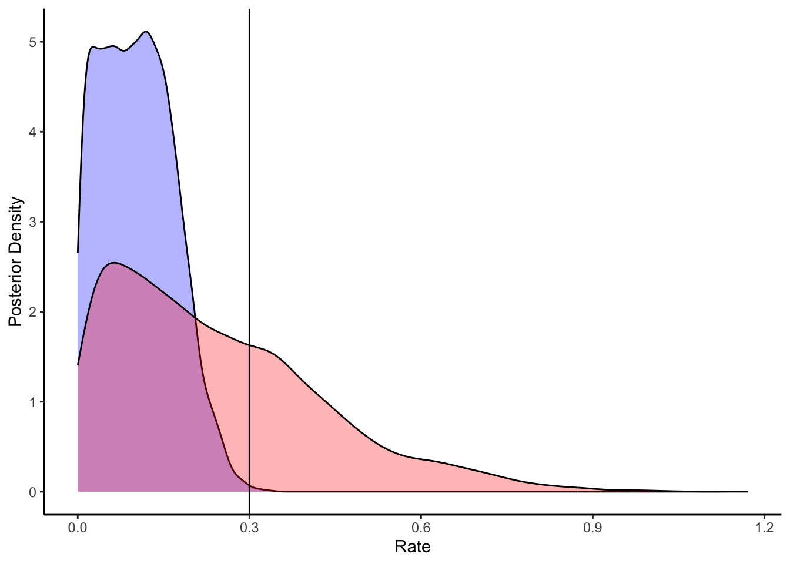

Chapter 8 Bonus chapter: Additional models developed by students
8.1 Additional models
Additional models that have been developed by previous students:
8.1.3 Memory agent with exponential memory decay (rate)
Memory = alpha * memory + (1 - alpha) * otherChoice
8.1.4 Memory agent with exponential memory decay (exponential)
The agent uses a weighted memory store, where previous choices are weighted by a factor based on how far back in the past they were made, represented by power. The agent first creates a vector of weights for each of the previous choices based on their position in the memory store and the power value. This model implements exponential decay of memory, according to a power law. Specifically, the opposing agent’s choices up to the present trial are encoded as 1’s and -1’s. The choices are weighted, and then summed. So, on trial i, the memory of the previous trial j is given a weight corresponding to j^(-1). Higher values of j correspond to earlier trials, with j = 1 being the most recent. Then a choice is made based on this weight according to the following formula:
Theta = inv_logit(alpha + beta * weightedMemory)
[N.B. really poor parameter recovery]
8.1.5 Memory agent with exponential memory decay, but separate memory for wins and losses
[N.B. really poor parameter recovery]
8.4 Generate data
[MISSING: EXPLAIN THE MODEL STEP BY STEP]
[MISSING: PARALLELIZE AND MAKE IT MORE SIMILAR TO PREVIOUS DATASETS]
8.5 Sanity check for the data
d <- d %>% group_by(agent, strategy) %>% mutate(
nextChoice = lead(choice),
prevWin = lag(win),
prevLose = lag(lose),
cumulativerate = cumsum(choice) / seq_along(choice),
performance = cumsum(feedback) / seq_along(feedback)
) %>% subset(complete.cases(d)) %>% subset(trial > 1)
p1 <- ggplot(d, aes(trial, cumulativerate, group = agent, color = agent)) +
geom_line() +
geom_hline(yintercept = 0.5, linetype = "dashed") + ylim(0,1) + theme_classic() + facet_wrap(.~strategy)
p1
p2a <- ggplot(subset(d, strategy == "Random"), aes(trial, 1 - performance, group = agent, color = agent)) +
geom_line() +
geom_hline(yintercept = 0.5, linetype = "dashed") + ylim(0,1) + theme_classic()
p2b <- ggplot(subset(d, strategy == "WSLS"), aes(trial, performance, group = agent, color = agent)) +
geom_line() +
geom_hline(yintercept = 0.5, linetype = "dashed") + ylim(0,1) + theme_classic()
library(patchwork)
p2a + p2b
8.6 More sanity check
## Checking lose/win are orthogonal
ggplot(d, aes(win, lose)) + geom_point() + theme_bw()
## Checking lose/win do determine choice
d %>% subset(strategy == "WSLS") %>%
mutate(nextChoice = lead(choice)) %>%
group_by(agent, win, lose) %>%
summarize(heads = mean(nextChoice)) %>%
ggplot(aes(win, heads)) +
geom_point() +
theme_bw() +
facet_wrap(~lose)## `summarise()` has grouped output by 'agent', 'win'. You can override using the
## `.groups` argument.## Warning: Removed 100 rows containing missing values (`geom_point()`).
8.7 Create data for single agent model
d_a <- d %>% subset(
strategy == "WSLS" & agent == 2
)
data_wsls_simple <- list(
trials = trials - 1,
h = d_a$choice,
win = d_a$prevWin,
lose = d_a$prevLose
)8.8 Create the model
[MISSING: MORE MEANINGFUL PREDICTIONS, BASED ON THE 4 SCENARIOS]
stan_wsls_model <- "
functions{
real normal_lb_rng(real mu, real sigma, real lb) {
real p = normal_cdf(lb | mu, sigma); // cdf for bounds
real u = uniform_rng(p, 1);
return (sigma * inv_Phi(u)) + mu; // inverse cdf for value
}
}
data {
int<lower = 1> trials;
array[trials] int h;
vector[trials] win;
vector[trials] lose;
}
parameters {
real alpha;
real winB;
real loseB;
}
model {
target += normal_lpdf(alpha | 0, .3);
target += normal_lpdf(winB | 1, 1);
target += normal_lpdf(loseB | 1, 1);
target += bernoulli_logit_lpmf(h | alpha + winB * win + loseB * lose);
}
generated quantities{
real alpha_prior;
real winB_prior;
real loseB_prior;
array[trials] int prior_preds;
array[trials] int posterior_preds;
vector[trials] log_lik;
alpha_prior = normal_rng(0, 1);
winB_prior = normal_rng(0, 1);
loseB_prior = normal_rng(0, 1);
prior_preds = bernoulli_rng(inv_logit(winB_prior * win + loseB_prior * lose));
posterior_preds = bernoulli_rng(inv_logit(winB * win + loseB * lose));
for (t in 1:trials){
log_lik[t] = bernoulli_logit_lpmf(h[t] | winB * win + loseB * lose);
}
}
"
write_stan_file(
stan_wsls_model,
dir = "stan/",
basename = "W8_WSLS.stan")## [1] "/Users/au209589/Dropbox/Teaching/AdvancedCognitiveModeling23_book/stan/W8_WSLS.stan"file <- file.path("stan/W8_WSLS.stan")
mod_wsls_simple <- cmdstan_model(file,
cpp_options = list(stan_threads = TRUE),
stanc_options = list("O1"),
pedantic = TRUE)## Model executable is up to date!samples_wsls_simple <- mod_wsls_simple$sample(
data = data_wsls_simple,
seed = 123,
chains = 2,
parallel_chains = 2,
threads_per_chain = 2,
iter_warmup = 2000,
iter_sampling = 2000,
refresh = 1000,
max_treedepth = 20,
adapt_delta = 0.99,
)## Running MCMC with 2 parallel chains, with 2 thread(s) per chain...
##
## Chain 1 Iteration: 1 / 4000 [ 0%] (Warmup)
## Chain 1 Iteration: 1000 / 4000 [ 25%] (Warmup)
## Chain 1 Iteration: 2000 / 4000 [ 50%] (Warmup)
## Chain 1 Iteration: 2001 / 4000 [ 50%] (Sampling)
## Chain 2 Iteration: 1 / 4000 [ 0%] (Warmup)
## Chain 2 Iteration: 1000 / 4000 [ 25%] (Warmup)
## Chain 2 Iteration: 2000 / 4000 [ 50%] (Warmup)
## Chain 2 Iteration: 2001 / 4000 [ 50%] (Sampling)
## Chain 1 Iteration: 3000 / 4000 [ 75%] (Sampling)
## Chain 2 Iteration: 3000 / 4000 [ 75%] (Sampling)
## Chain 1 Iteration: 4000 / 4000 [100%] (Sampling)
## Chain 2 Iteration: 4000 / 4000 [100%] (Sampling)
## Chain 1 finished in 0.6 seconds.
## Chain 2 finished in 0.6 seconds.
##
## Both chains finished successfully.
## Mean chain execution time: 0.6 seconds.
## Total execution time: 0.8 seconds.8.9 Basic assessment
samples_wsls_simple$summary() ## # A tibble: 364 × 10
## variable mean median sd mad q5 q95 rhat ess_bulk ess_tail
## <chr> <num> <num> <num> <num> <num> <num> <num> <num> <num>
## 1 lp__ -7.31e+1 -7.28e+1 1.17 0.968 -75.5 -71.8 1.00 1604. 2128.
## 2 alpha -1.14e-1 -1.15e-1 0.184 0.187 -0.409 0.188 1.00 2636. 2173.
## 3 winB 1.03e+0 1.02e+0 0.287 0.287 0.573 1.52 1.00 2671. 2245.
## 4 loseB 1.05e+0 1.04e+0 0.299 0.299 0.572 1.56 1.00 2462. 2119.
## 5 alpha_pri… 1.41e-2 2.91e-2 0.994 0.997 -1.66 1.63 1.00 3983. 3845.
## 6 winB_prior 2.02e-2 7.96e-3 1.02 1.03 -1.67 1.70 1.00 3776. 3413.
## 7 loseB_pri… 2.72e-3 8.60e-3 1.00 1.01 -1.61 1.63 1.00 3951. 4087.
## 8 prior_pre… 5.00e-1 0 0.500 0 0 1 1.00 3906. NA
## 9 prior_pre… 4.92e-1 0 0.500 0 0 1 1.00 3819. NA
## 10 prior_pre… 5.14e-1 1 e+0 0.500 0 0 1 1.00 3958. NA
## # ℹ 354 more rows# Extract posterior samples and include sampling of the prior:
draws_df <- as_draws_df(samples_wsls_simple$draws())
# Now let's plot the density for theta (prior and posterior)
ggplot(draws_df) +
geom_density(aes(alpha), fill = "blue", alpha = 0.3) +
geom_density(aes(alpha_prior), fill = "red", alpha = 0.3) +
geom_vline(xintercept = d_a$alpha[1]) +
xlab("Rate") +
ylab("Posterior Density") +
theme_classic()
ggplot(draws_df) +
geom_density(aes(winB), fill = "blue", alpha = 0.3) +
geom_density(aes(winB_prior), fill = "red", alpha = 0.3) +
geom_vline(xintercept = d_a$betaWin[1]) +
xlab("Rate") +
ylab("Posterior Density") +
theme_classic()
ggplot(draws_df) +
geom_density(aes(loseB), fill = "blue", alpha = 0.3) +
geom_density(aes(loseB_prior), fill = "red", alpha = 0.3) +
geom_vline(xintercept = d_a$betaLose[1]) +
xlab("Rate") +
ylab("Posterior Density") +
theme_classic()
[MISSING: FULL PARAMETER RECOVERY]
8.10 Create multilevel data
## Now multilevel model
d_wsls1 <- d %>% subset(strategy == "WSLS") %>%
subset(select = c(agent, choice)) %>%
mutate(row = row_number()) %>%
pivot_wider(names_from = agent, values_from = choice)
d_wsls2 <- d %>% subset(strategy == "WSLS") %>%
subset(select = c(agent, prevWin)) %>%
mutate(row = row_number()) %>%
pivot_wider(names_from = agent, values_from = prevWin)
d_wsls3 <- d %>% subset(strategy == "WSLS") %>%
subset(select = c(agent, prevLose)) %>%
mutate(row = row_number()) %>%
pivot_wider(names_from = agent, values_from = prevLose)
## Create the data
data_wsls <- list(
trials = trials - 1,
agents = agents,
h = as.matrix(d_wsls1[,2:(agents + 1)]),
win = as.matrix(d_wsls2[,2:(agents + 1)]),
lose = as.matrix(d_wsls3[,2:(agents + 1)])
)8.11 Create the model
[MISSING: ADD BIAS]
[MISSING: BETTER PREDICTIONS BASED ON 4 SCENARIOS]
stan_wsls_ml_model <- "
functions{
real normal_lb_rng(real mu, real sigma, real lb) {
real p = normal_cdf(lb | mu, sigma); // cdf for bounds
real u = uniform_rng(p, 1);
return (sigma * inv_Phi(u)) + mu; // inverse cdf for value
}
}
// The input (data) for the model.
data {
int<lower = 1> trials;
int<lower = 1> agents;
array[trials, agents] int h;
array[trials, agents] real win;
array[trials, agents] real lose;
}
parameters {
real winM;
real loseM;
vector<lower = 0>[2] tau;
matrix[2, agents] z_IDs;
cholesky_factor_corr[2] L_u;
}
transformed parameters {
matrix[agents,2] IDs;
IDs = (diag_pre_multiply(tau, L_u) * z_IDs)';
}
model {
target += normal_lpdf(winM | 0, 1);
target += normal_lpdf(tau[1] | 0, .3) -
normal_lccdf(0 | 0, .3);
target += normal_lpdf(loseM | 0, .3);
target += normal_lpdf(tau[2] | 0, .3) -
normal_lccdf(0 | 0, .3);
target += lkj_corr_cholesky_lpdf(L_u | 2);
target += std_normal_lpdf(to_vector(z_IDs));
for (i in 1:agents)
target += bernoulli_logit_lpmf(h[,i] | to_vector(win[,i]) * (winM + IDs[i,1]) + to_vector(lose[,i]) * (loseM + IDs[i,2]));
}
generated quantities{
real winM_prior;
real<lower=0> winSD_prior;
real loseM_prior;
real<lower=0> loseSD_prior;
real win_prior;
real lose_prior;
array[trials,agents] int<lower=0, upper = trials> prior_preds;
array[trials,agents] int<lower=0, upper = trials> posterior_preds;
array[trials, agents] real log_lik;
winM_prior = normal_rng(0,1);
winSD_prior = normal_lb_rng(0,0.3,0);
loseM_prior = normal_rng(0,1);
loseSD_prior = normal_lb_rng(0,0.3,0);
win_prior = normal_rng(winM_prior, winSD_prior);
lose_prior = normal_rng(loseM_prior, loseSD_prior);
for (i in 1:agents){
prior_preds[,i] = binomial_rng(trials, inv_logit(to_vector(win[,i]) * (win_prior) + to_vector(lose[,i]) * (lose_prior)));
posterior_preds[,i] = binomial_rng(trials, inv_logit(to_vector(win[,i]) * (winM + IDs[i,1]) + to_vector(lose[,i]) * (loseM + IDs[i,2])));
for (t in 1:trials){
log_lik[t,i] = bernoulli_logit_lpmf(h[t,i] | to_vector(win[,i]) * (winM + IDs[i,1]) + to_vector(lose[,i]) * (loseM + IDs[i,2]));
}
}
}
"
write_stan_file(
stan_wsls_ml_model,
dir = "stan/",
basename = "W8_wsls_ml.stan")## [1] "/Users/au209589/Dropbox/Teaching/AdvancedCognitiveModeling23_book/stan/W8_wsls_ml.stan"file <- file.path("stan/W8_wsls_ml.stan")
mod_wsls <- cmdstan_model(file, cpp_options = list(stan_threads = TRUE),
stanc_options = list("O1"),
pedantic = TRUE)## Model executable is up to date!samples_wsls_ml <- mod_wsls$sample(
data = data_wsls,
seed = 123,
chains = 2,
parallel_chains = 2,
threads_per_chain = 2,
iter_warmup = 2000,
iter_sampling = 2000,
refresh = 1000,
max_treedepth = 20,
adapt_delta = 0.99,
)## Running MCMC with 2 parallel chains, with 2 thread(s) per chain...
##
## Chain 1 Iteration: 1 / 4000 [ 0%] (Warmup)
## Chain 2 Iteration: 1 / 4000 [ 0%] (Warmup)
## Chain 2 Iteration: 1000 / 4000 [ 25%] (Warmup)
## Chain 2 Iteration: 2000 / 4000 [ 50%] (Warmup)
## Chain 2 Iteration: 2001 / 4000 [ 50%] (Sampling)
## Chain 1 Iteration: 1000 / 4000 [ 25%] (Warmup)
## Chain 1 Iteration: 2000 / 4000 [ 50%] (Warmup)
## Chain 1 Iteration: 2001 / 4000 [ 50%] (Sampling)
## Chain 2 Iteration: 3000 / 4000 [ 75%] (Sampling)
## Chain 1 Iteration: 3000 / 4000 [ 75%] (Sampling)
## Chain 2 Iteration: 4000 / 4000 [100%] (Sampling)
## Chain 2 finished in 136.1 seconds.
## Chain 1 Iteration: 4000 / 4000 [100%] (Sampling)
## Chain 1 finished in 155.3 seconds.
##
## Both chains finished successfully.
## Mean chain execution time: 145.7 seconds.
## Total execution time: 155.3 seconds.8.12 Quality checks
samples_wsls_ml$summary() ## # A tibble: 36,115 × 10
## variable mean median sd mad q5 q95 rhat ess_bulk
## <chr> <num> <num> <num> <num> <num> <num> <num> <num>
## 1 lp__ -5844. -5843. 14.6 14.6 -5868. -5.82e+3 1.00 878.
## 2 winM 1.53 1.53 0.0442 0.0437 1.46 1.60e+0 1.00 1931.
## 3 loseM 1.51 1.51 0.0480 0.0468 1.43 1.59e+0 1.00 2425.
## 4 tau[1] 0.307 0.306 0.0466 0.0462 0.234 3.85e-1 1.00 1480.
## 5 tau[2] 0.301 0.302 0.0603 0.0592 0.203 4.00e-1 1.00 1418.
## 6 z_IDs[1,1] -0.577 -0.591 0.729 0.716 -1.76 6.28e-1 1.00 4231.
## 7 z_IDs[2,1] 0.773 0.775 0.823 0.822 -0.592 2.14e+0 1.00 3736.
## 8 z_IDs[1,2] -0.965 -0.972 0.707 0.691 -2.13 2.02e-1 1.00 4053.
## 9 z_IDs[2,2] -0.817 -0.820 0.770 0.770 -2.05 4.19e-1 1.00 4131.
## 10 z_IDs[1,3] -1.60 -1.61 0.659 0.653 -2.69 -5.16e-1 1.00 4457.
## # ℹ 36,105 more rows
## # ℹ 1 more variable: ess_tail <num># Extract posterior samples and include sampling of the prior:
draws_df <- as_draws_df(samples_wsls_ml$draws())
# Now let's plot the density for theta (prior and posterior)
ggplot(draws_df) +
geom_density(aes(winM), fill = "blue", alpha = 0.3) +
geom_density(aes(win_prior), fill = "red", alpha = 0.3) +
geom_vline(xintercept = d$betaWinM[1]) +
xlab("Rate") +
ylab("Posterior Density") +
theme_classic()
ggplot(draws_df) +
geom_density(aes(`tau[1]`), fill = "blue", alpha = 0.3) +
geom_density(aes(`winSD_prior`), fill = "red", alpha = 0.3) +
geom_vline(xintercept = d$betaWinSD[1]) +
xlab("Rate") +
ylab("Posterior Density") +
theme_classic()
ggplot(draws_df) +
geom_density(aes(loseM), fill = "blue", alpha = 0.3) +
geom_density(aes(loseM_prior), fill = "red", alpha = 0.3) +
geom_vline(xintercept = d$betaLoseM[1]) +
xlab("Rate") +
ylab("Posterior Density") +
theme_classic()
ggplot(draws_df) +
geom_density(aes(`tau[2]`), fill = "blue", alpha = 0.3) +
geom_density(aes(`loseSD_prior`), fill = "red", alpha = 0.3) +
geom_vline(xintercept = d$betaLoseSD[1]) +
xlab("Rate") +
ylab("Posterior Density") +
theme_classic()
[MISSING: Model comparison with biased] [MISSING: Mixture model with biased]